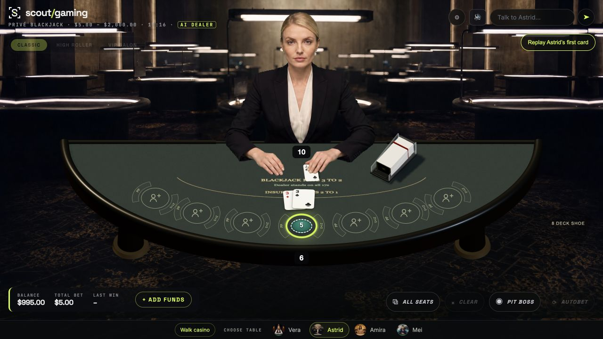
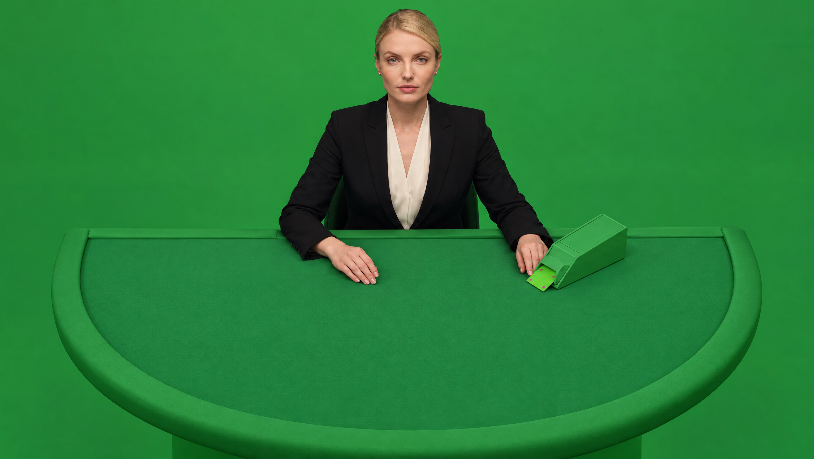

Astrid — elevated camera reference
New Seedance source with your approved angle. The masked take is connected to her first upcard in the game table. Transitions to the existing clips remain under review.
Captured during actual gameplay replay, using the server-issued card.Approved camera reference
